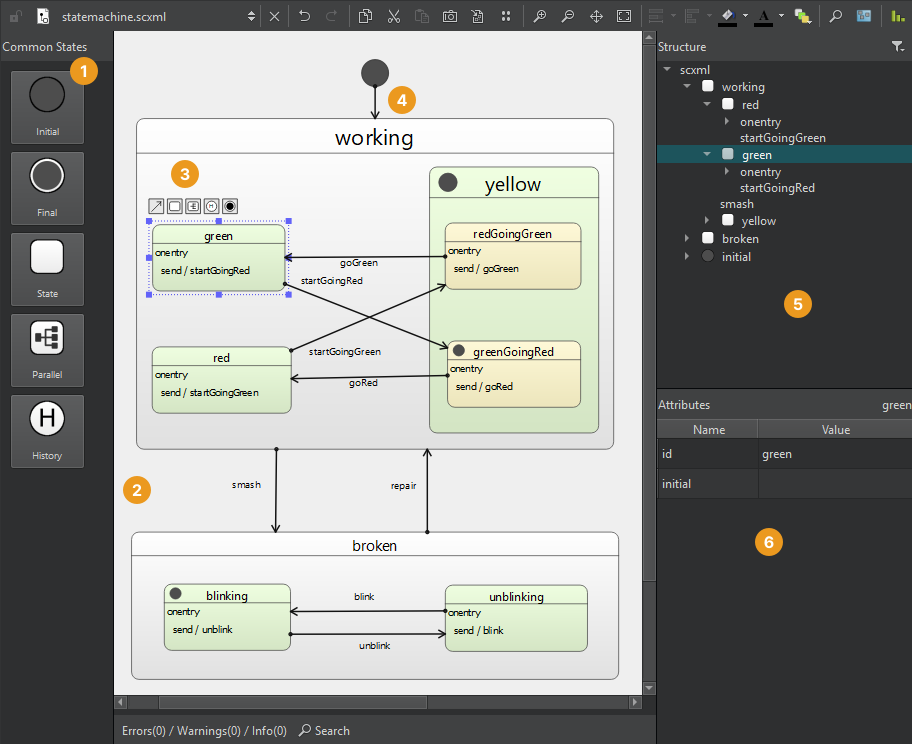

SCXML Editor
State charts are a graphical way of modeling how a system reacts to stimuli. They define the states that the system can be in, and how the system can move from one state to another (transitions between states). The behavior of event-driven systems (such as Qt applications) often depends not only on the last or current event, but also on earlier events. With state charts, you can easily share this information.
With the Qt Creator file wizard, you can add State Chart XML (SCXML) files with boilerplate code to projects. Edit the state charts with the SCXML editor to add states and transitions to the files. Then, use the classes in the Qt SCXML module to embed the state machines created from the files in Qt applications.
When you open an .scxml file, it opens in the SCXML editor:

Drag states from the Common States view (1) to the state editor (2). Select a state in the state editor and use the tool buttons (3) to create a transition (4) and its target state.
View the state chart structure in the Structure view (5) and specify attributes for the selected state or transition in the Attributes view (6).
Navigating State Charts
Use the toolbar buttons to execute functions such as editing, zooming, magnifying, navigating, and panning state charts, as well as taking screenshots and viewing statistics.
| Button | Name | Description |
|---|---|---|
 | Save Screenshot | Saves the currently visible part of the state chart as an image. |
| Export Canvas to Image | Saves the whole state chart as an image. | |

| Zoom In Zoom Out | Zooms into or out of the whole state chart in the state editor. You can also press Ctrl and use the mouse wheel. |
 | Panning | Pans the state chart. To increase the pace of panning, press down the Shift key. |
 | Fit to View | Makes the whole state chart visible in the state editor at a time. |
 | Magnifier Tool | Zooms into a part of the state chart. To move the magnifier tool faster, press down the Alt key. |
 | Navigator | Shows a particular part of a large state chart in the state editor. Move the navigator frame on the part you want to view. |
| View Statistics | Shows statistics about the numbers of states and transitions in the state chart. |

To search in the state chart, select Search and start typing in the Filter field. The search checks the whole SCXML tree for attributes that match the search criteria.
States
When the state machine enters a state in response to an event, the state that it entered becomes the active state.
State charts are hierarchical, and therefore you can nest states inside other states to create compound states.
You can create the following types of states:
| Button | Name | Description |
|---|---|---|
 | Initial | The state that the state machine enters when it starts. |
| State | The basic state. | |
| Parallel | Has child states that execute in parallel and are all active simultaneously. Each child state processes events independently, and the events may trigger different transitions for each child. | |
| Final | Lets a state machine finish. When the state machine enters a top-level final state, it emits the finished signal and halts. You can create final states in compound states to hide the internal details of a compound state. The outside world can only enter the state and get a notification when the state has finished. A parallel state finishes when all its child states reach final states. | |
| History | A pseudo-state that represents the child state the parent state was in the last time the parent state was exited. Create a history state as a child of the state for which you want to record the current child state. When the state machine detects the presence of such a state at runtime, it automatically records the current (real) child state when the parent state is exited. A transition to the history state is in fact a transition to the child state that the state machine previously saved. The state machine automatically forwards the transition to the real child state. |
To create transitions between states, select .
Adding States
You can add new states to the state chart in the following ways:
- Drag states from the Common States view to the state editor.
- Select a state in the state editor, and then select the State tool button to create a transition and its target state.
- Copy and paste states within the SCXML editor or between the SCXML editor and the Edit mode.
Drag states on top of other states to create compound states. You can also drag child states out of their parent state. To move child states within their parent, press down the Ctrl key while dragging them.
Aligning and Editing States
Use the toolbar buttons to align states in the state editor, to adjust their size, color, and fonts, and to change the default color scheme.
Overlapping states are marked in red color.
Viewing State Tree Structure
To expand or collapse the state tree structure in the Structure view, double-click a state.
To view a child state of a nested state in more detail in the state editor, select Zoom to State.
To ensure that the state ids are unique within a compound state machine, select  (Toggle Full Namespace). The name of the parent state is added to the names of the child states, separated by two colons (::). For example:
(Toggle Full Namespace). The name of the parent state is added to the names of the child states, separated by two colons (::). For example:
<state id="broken">
...
<state id="broken::blinking">
...
</state>
<state id="broken::unblinking">
...
</state>
</state>
Managing Transitions
Transitions define how a state reacts to events that either the state machine or external entities generate. When events occur, the state machine checks for a matching transition in the active state and moves to its target state.
To create a transition from the selected state to a new state, drag and release the mouse at the location where you want to add the target state. When you draw a transition to the center of another state, it points to the center of the state, but you can also draw a transition to the edge of the state.
The editor center-aligns transition labels, but you can drag them to other positions.
To add edge points to transitions, select a transition line. You can add only two edge points for each line. The editor automatically removes unnecessary edge points. To remove the selected edge point, select Remove Point in the context menu.
To add new edge points with a mouse click, select .
To remove the selected transition, select Remove in the context menu.
Adding Executable Content
Add executable content to a state chart to enable the state machine to change its data model and to interact with external entities.
Use the context menu commands to add executable content to the <onentry> and <onexit> elements or to transitions:
<raise>to raise events<send>to communicate with external entities<script>to run scripts<assign>to change the data model<cancel>to cancel action execution<log>to record information in a log<if>to execute actions conditionally<foreach>to iterate over the items in a collection and execute an action for each of them
During a transition, the state machine executes the content that you specify for the <onexit> element in the state it is leaving, then the content in the transition, and then the content for the <onentry> element in the state it is entering.
You can add attributes for the selected executable content in the Attributes view.
See also Create state charts.